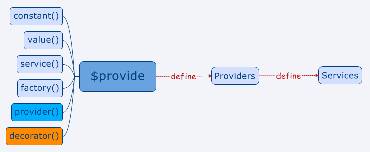

# angular中的服务
### 1. 概述
angular 中有如下定义服务的方法

angular 可以通过$provider来定义服务
```
myMod.config(function($provide) {
$provide.provider('greeting', function() {
this.$get = function() {
return function(name) {
alert("Hello, " + name);
};
};
});
});
```
AngularJS用$provide去定义一个供应商,这个$provide有5个用来创建供应商的方法：
constant
value
service
factory
provider
decorator 我没有说我也是，我只是路过o(╯□╰)o
### 2. constant 方法
定义常量用的，这货定义的值当然就不能被改变，它可以被注入到任何地方，但是不能被装饰器(decorator)装饰
```
var app = angular.module('app', []);
app.config(function ($provide) {
$provide.constant('movieTitle', 'The Matrix');
});
app.controller('ctrl', function (movieTitle) {
expect(movieTitle).toEqual('The Matrix');
});
```
语法糖:
```
app.constant('movieTitle', 'The Matrix');
```
### 3. value 方法
这货可以是string,number甚至function,它和constant的不同之处在于，它可以被修改，不能被注入到config中，但是它可以被decorator装饰
```
var app = angular.module('app', []);
app.config(function ($provide) {
$provide.value('movieTitle', 'The Matrix')
});
app.controller('ctrl', function (movieTitle) {
expect(movieTitle).toEqual('The Matrix');
})
```
语法糖:
```
app.value('movieTitle', 'The Matrix');
```
### 4. service
它是一个可注入的构造器，在AngularJS中它是单例的，用它在Controller中通信或者共享数据都很合适
```
var app = angular.module('app' ,[]);
app.config(function ($provide) {
$provide.service('movie', function () {
this.title = 'The Matrix';
});
});
app.controller('ctrl', function (movie) {
expect(movie.title).toEqual('The Matrix');
});
```
语法糖：
```
app.service('movie', function () {
this.title = 'The Matrix';
});
```
### 5. factory 方法
它是一个可注入的function，它和service的区别就是：factory是普通function，而service是一个构造器(constructor)，这样Angular在调用service时会用new关键字，而调用factory时只是调用普通的function，factory 需要有返回值. service不需要返回
```
var app = angular.module('app', []);
app.config(function ($provide) {
$provide.factory('movie', function () {
return {
title: 'The Matrix';
}
});
});
app.controller('ctrl', function (movie) {
expect(movie.title).toEqual('The Matrix');
});
```
语法糖：
```
app.factory('movie', function () {
return {
title: 'The Matrix';
}
});
```
factory可以返回任何东西，它实际上是一个只有$get方法的provider
### 6. provider 方法
provider是他们的老大，上面的几乎(除了constant)都是provider的封装，provider必须有一个$get方法，当然也可以说provider是一个可配置的factory
```
var app = angular.module('app', []);
app.provider('movie', function () {
var version;
return {
setVersion: function (value) {
version = value;
},
$get: function () {
return {
title: 'The Matrix' + ' ' + version
}
}
}
});
app.config(function (movieProvider) {
movieProvider.setVersion('Reloaded');
});
app.controller('ctrl', function (movie) {
expect(movie.title).toEqual('The Matrix Reloaded');
});
```
注意这里config方法注入的是movieProvider，上面定义了一个供应商叫movie，但是注入到config中不能直接写movie，因为前文讲了注入的那个东西就是服务，是供应商提供出来的，而config中又只能注入供应商（两个例外是$provide和$injector），所以用驼峰命名法写成movieProvider，Angular就会帮你注入它的供应商。（更详细可参考文末官方wiki翻译版中的配置provider）
### 7. decorator
这个比较特殊，它不是provider,它是用来装饰其他provider的，而前面也说过，他不能装饰Constant，因为实际上Constant不是通过provider()方法创建的。
```
var app = angular.module('app', []);
app.value('movieTitle', 'The Matrix');
app.config(function ($provide) {
$provide.decorator('movieTitle', function ($delegate) {
return $delegate + ' - starring Keanu Reeves';
});
});
app.controller('myController', function (movieTitle) {
expect(movieTitle).toEqual('The Matrix - starring Keanu Reeves');
})
```
### 8 总结
所有的供应商都只被实例化一次，也就说他们都是单例的
除了constant，所有的供应商都可以被装饰器(decorator)装饰
value就是一个简单的可注入的值
service是一个可注入的构造器
factory是一个可注入的方法
decorator可以修改或封装其他的供应商，当然除了constant
provider是一个可配置的factory
## angular中service factory provider的区别
factory 用函数方法定义服务.
service 用面向对象的方法定义服务.
provider 函数方法定义服务, 但是provider定义的服务可以注入到配置 config中,在程序一开始就执行(如 路由服务).
### 1. 服务与控制器的区别
angular中 service 服务在调用的时候创建, 只到关闭浏览器才会清除, controller在不需要的时候就会被销毁了.
这就是为什么使用controllers在应用里面传递数据不可靠的原因，特别是使用routing的时候。Services are designed to be the glue between controllers, the minions of data, the slaves of functionality, the worker-bees of our application（就是说services在应用的controllers、 方法、数据之前起到了很关键的作用）
### 2. factory() 创建服务
Angular里面创建service最简单的方式是使用factory()方法。
#### 2.1 factory 定义方法
factory()让我们通过返回一个包含service方法和数据的对象来定义一个service。在service方法里面我们可以注入services，比如 $http 和 $q等。
```
<script type="text/javascript">
angular.module("app",[])
.factory("Observer",function($http){
return {
eventArr : [],
regist : function(){
},
fire : function(){
},
remove : function(){
}
}
})
</script>
```
#### 2.2 factory() 定义的服务调用
```
angular.module("app",[])
.controller("main",function(Observer){
Observer.regist("haha",function(){})
})
```
#### 2.3 什么时候使用factory()方法
在service里面当我们仅仅需要的是一个方法和数据的集合且不需要处理复杂的逻辑的时候，factory()是一个非常不错的选择。
### 3 service() 定义服务
service 通过构造函数方式创建服务
#### 3.1 定义方式
```
<script type="text/javascript">
angular.module("app",[])
.service("Observer",function(){
this.__msg = {};
this.regist = function(){
}
this.fire = function(){
}
})
</script>
```
#### 3.2 调用方式
调用方式一样
```
angular.module("app",[])
.controller("main",function(Observer){
Observer.regist("haha",function(){
})
})
```
#### 3.3 什么时候适合使用service()方法
service 是构造函数方式定义的, 在调用的时候会创建一个实例
service()方法很适合使用在功能控制比较多的service里面
注意：需要使用.config()来配置服务的时候不能使用service()方法
### 4 provider() 方法
provider()是创建service最底层的方式，这也是唯一一个可以使用.config()方法配置创建service的方法
#### 4.1 定义
必须返回一个 $get方法.
```
<script type="text/javascript">
angular.module('app',[])
.provider('User', function() {
this.backendUrl = "http://localhost:3000";
this.setBackendUrl = function(newUrl) {
if (url) this.backendUrl = newUrl;
}
this.$get = function($http) { // injectables go here
var self = this;
var service = {
user: {},
setName: function(newName) {
service.user['name'] = newName;
},
setEmail: function(newEmail) {
service.user['email'] = newEmail;
},
save: function() {
return $http.post(self.backendUrl + '/users', {
user: service.user
})
}
};
return service;
}
});
</script>
```
#### 4.2 调用
provider 定义的服务可以注入到配置 config中; 在程序最开始初始化的时候就进行调用
```
angular.module('myApp')
.config(function(UserProvider) {
UserProvider.setBackendUrl("http://myApiBackend.com/api");
})
```
#### 4.3 什么时候使用provider()方法
>1. 当我们希望在应用开始前对service进行配置的时候就需要使用到provider()。比如，我们需要配置services在不同的部署环境里面（开发，演示，生产）使用不同的后端处理的时候就可以使用到了
>2. 当我们打算发布开源provider()也是首选创建service的方法，这样就可以使用配置的方式来配置services而不是将配置数据硬编码写到代码里面。